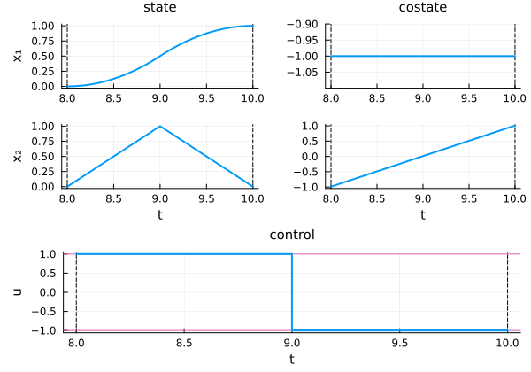

Free initial and final times
This tutorial is part of a series on optimal control problems with free time variables. See also: Free final time and Free initial time.
In this tutorial, we consider an optimal control problem with the initial and final times as free variables, that is there are parts of the variable to be optimized. The required packages for the tutorial are:
using OptimalControl # Main package
using NLPModelsIpopt # Direct solver
using Plots # VisualizationThe problem we consider is the following:
@def ocp begin
v = (t0, tf) ∈ R², variable # the initial and final times are free variables
t ∈ [t0, tf], time
x ∈ R², state
u ∈ R, control
-1 ≤ u(t) ≤ 1
x(t0) == [0, 0]
x(tf) == [1, 0]
0.05 ≤ t0 ≤ 10
0.05 ≤ tf ≤ 10
0.01 ≤ tf - t0 ≤ Inf
ẋ(t) == [x₂(t), u(t)]
t0 → max
endWe now solve the problem using a direct method.
sol = solve(ocp; grid_size=100)▫ This is OptimalControl 2.0.4, solving with: collocation → adnlp → ipopt (cpu)
📦 Configuration:
├─ Discretizer: collocation (grid_size = 100)
├─ Modeler: adnlp
└─ Solver: ipopt
▫ This is Ipopt version 3.14.19, running with linear solver MUMPS 5.8.2.
Number of nonzeros in equality constraint Jacobian...: 1104
Number of nonzeros in inequality constraint Jacobian.: 2
Number of nonzeros in Lagrangian Hessian.............: 402
Total number of variables............................: 304
variables with only lower bounds: 0
variables with lower and upper bounds: 102
variables with only upper bounds: 0
Total number of equality constraints.................: 204
Total number of inequality constraints...............: 1
inequality constraints with only lower bounds: 1
inequality constraints with lower and upper bounds: 0
inequality constraints with only upper bounds: 0
iter objective inf_pr inf_du lg(mu) ||d|| lg(rg) alpha_du alpha_pr ls
0 1.0000000e-01 9.00e-01 5.00e-01 0.0 0.00e+00 - 0.00e+00 0.00e+00 0
1 5.0499990e-02 8.88e-01 2.23e+14 -6.0 8.72e+00 - 1.08e-03 1.18e-02H 1
MUMPS returned INFO(1) = -9 and requires more memory, reallocating. Attempt 1
Increasing icntl[13] from 1000 to 2000.
2 5.7489861e-02 8.88e-01 2.22e+14 2.0 2.90e+03 2.0 3.19e-04 8.08e-05f 3
3 5.8079554e-02 8.88e-01 2.22e+14 2.0 1.92e+02 1.5 1.00e+00 5.52e-05h 7
4 5.8080717e-02 8.88e-01 2.22e+14 3.0 5.78e+02 - 1.89e-03 2.47e-05h 7
5 5.1870210e-02 8.88e-01 2.14e+14 3.0 2.46e+03 4.7 2.82e-04 2.82e-04s 11
6 5.1821427e-02 8.87e-01 1.96e+14 2.1 1.17e+03 - 6.36e-04 6.36e-04s 12
7 5.1579355e-02 8.83e-01 1.21e+14 1.4 2.84e+02 - 2.12e-03 4.41e-03f 1
8 5.2913027e-02 8.83e-01 1.21e+14 0.7 2.22e+02 12.5 3.28e-05 2.79e-05h 1
9r 5.2913027e-02 8.83e-01 9.99e+02 0.0 0.00e+00 12.9 0.00e+00 4.62e-07R 3
iter objective inf_pr inf_du lg(mu) ||d|| lg(rg) alpha_du alpha_pr ls
10r 7.5768001e-02 8.91e-01 9.58e+02 1.2 3.94e+00 - 9.96e-01 2.49e-02f 1
11r 4.4847439e-01 5.33e-01 2.19e+02 -0.8 4.82e-01 - 9.22e-01 7.73e-01f 1
12 4.9586757e-01 5.30e-01 7.83e+00 -6.0 1.86e+01 - 4.48e-02 5.64e-03h 1
13 4.9688983e-01 5.30e-01 2.06e+02 -6.0 7.22e+02 - 2.27e-04 9.59e-06h 1
14 4.9690006e-01 5.30e-01 2.98e+02 -6.0 7.70e+04 - 2.03e-07 1.42e-07h 1
15 4.9690013e-01 5.30e-01 4.41e+02 -6.0 2.63e+05 - 1.01e-07 6.50e-08h 2
16 4.9690028e-01 5.30e-01 1.19e+03 -0.1 2.46e+05 - 3.13e-07 1.19e-07f 2
17 4.9690094e-01 5.30e-01 4.43e+02 -0.1 2.09e+05 - 3.88e-07 5.97e-07f 1
18 4.9690288e-01 5.30e-01 1.77e+03 -0.1 1.72e+05 - 1.15e-06 1.84e-06f 1
19 4.9690690e-01 5.30e-01 1.78e+03 -0.1 1.14e+05 - 3.81e-06 3.81e-06f 1
iter objective inf_pr inf_du lg(mu) ||d|| lg(rg) alpha_du alpha_pr ls
20 4.9692826e-01 5.30e-01 1.63e+04 -0.1 6.60e+04 - 4.01e-06 2.02e-05f 1
21 4.9726011e-01 5.30e-01 1.67e+04 1.9 9.18e+04 - 2.28e-06 4.35e-06f 2
22 4.9739922e-01 5.30e-01 1.70e+04 1.9 1.48e+05 - 1.56e-06 1.93e-06f 3
23 4.9753434e-01 5.30e-01 1.73e+04 1.9 1.43e+05 - 6.04e-07 1.90e-06f 3
24 4.9759392e-01 5.30e-01 1.74e+04 1.8 1.62e+05 - 4.84e-07 8.73e-07f 4
25 4.9765124e-01 5.30e-01 1.75e+04 1.8 1.64e+05 - 9.15e-07 8.52e-07f 4
26 4.9767989e-01 5.30e-01 1.75e+04 1.8 1.61e+05 - 5.70e-07 4.26e-07f 5
27 4.9770895e-01 5.30e-01 1.75e+04 1.8 1.58e+05 - 2.15e-06 4.30e-07f 5
28 4.9772593e-01 5.30e-01 1.75e+04 1.9 1.55e+05 - 8.89e-07 2.37e-07f 6
29 4.9773042e-01 5.30e-01 1.91e+04 1.9 1.60e+05 - 2.14e-06 6.08e-08f 8
iter objective inf_pr inf_du lg(mu) ||d|| lg(rg) alpha_du alpha_pr ls
30 4.9773066e-01 5.30e-01 1.95e+04 -0.2 1.54e+05 - 8.72e-07 2.65e-07f 6
31 4.9773067e-01 5.30e-01 2.04e+04 -0.2 1.57e+05 - 1.23e-06 8.35e-09f 11
32 4.9773073e-01 5.30e-01 2.13e+04 -0.2 1.57e+05 - 1.65e-06 6.92e-08f 8
33 4.9773079e-01 5.30e-01 2.19e+04 -0.2 1.58e+05 - 1.42e-06 7.02e-08f 8
34 4.9773082e-01 5.30e-01 2.25e+04 -0.2 1.59e+05 - 3.19e-06 3.54e-08f 9
35 4.9773085e-01 5.30e-01 2.14e+04 -0.2 1.60e+05 - 3.42e-06 3.57e-08f 9
36r 4.9773085e-01 5.30e-01 1.00e+03 -0.2 0.00e+00 - 0.00e+00 2.65e-07R 6
37r 4.9796397e-01 5.13e-01 5.02e+02 -6.0 3.52e-02 - 9.89e-01 4.98e-01f 1
38r 6.8112630e-01 4.08e-01 4.69e+00 -2.7 4.24e-01 - 8.25e-01 9.91e-01f 1
39 6.7651862e-01 4.08e-01 5.60e+03 2.2 4.55e+03 - 5.34e-07 3.21e-05f 4
iter objective inf_pr inf_du lg(mu) ||d|| lg(rg) alpha_du alpha_pr ls
40 6.6671937e-01 4.08e-01 5.60e+03 0.1 1.12e+03 - 6.77e-05 6.77e-05s 13
41 6.6402898e-01 4.08e-01 5.60e+03 -0.6 6.05e+02 - 2.92e-04 2.89e-05h 7
42 6.6094451e-01 4.08e-01 5.60e+03 -0.6 4.80e+02 - 1.76e-03 3.65e-05h 7
43 6.5069498e-01 4.08e-01 5.60e+03 -0.6 2.74e+02 - 3.91e-04 1.33e-04h 6
44 6.3931784e-01 4.08e-01 5.60e+03 -0.6 1.83e+02 - 6.71e-03 1.95e-04h 6
45 6.0620218e-01 4.08e-01 5.60e+03 -0.6 1.19e+02 - 1.13e-03 7.21e-04h 5
46 5.8223114e-01 4.07e-01 5.60e+03 1.2 6.77e+01 - 5.92e-02 2.38e-03h 4
47 1.9967428e+00 3.99e-01 5.50e+03 2.0 9.67e+01 - 1.78e-02 1.77e-02f 1
48 2.5700517e+00 3.65e-01 5.02e+03 0.5 5.56e+00 - 3.80e-01 8.68e-02H 1
49 2.6643680e+00 3.64e-01 5.08e+03 2.4 2.84e+02 - 7.25e-03 1.21e-03h 1
iter objective inf_pr inf_du lg(mu) ||d|| lg(rg) alpha_du alpha_pr ls
50 4.6616911e+00 3.57e-01 5.22e+03 2.5 1.26e+02 - 4.81e-03 1.92e-02f 1
51 4.4094483e+00 2.94e-01 4.32e+03 1.1 4.36e+00 - 1.00e+00 1.77e-01h 1
52 4.2544584e+00 1.76e-02 4.36e+03 1.3 1.49e+00 - 1.00e+00 1.00e+00f 1
53 4.5535207e+00 3.43e-04 5.82e+02 0.3 2.99e-01 - 1.00e+00 1.00e+00f 1
54 6.9064896e+00 9.32e-05 2.43e+01 -0.3 2.40e+00 - 1.00e+00 1.00e+00f 1
55 7.6151446e+00 3.83e-05 2.79e+00 -1.2 8.32e-01 - 9.98e-01 9.18e-01f 1
56 7.6591002e+00 9.86e-06 7.54e-02 -2.7 4.40e-02 - 9.97e-01 1.00e+00h 1
57 7.9369031e+00 1.24e-03 1.73e-02 -3.4 4.47e-01 - 9.91e-01 1.00e+00f 1
58 7.9873549e+00 2.93e-04 3.05e-03 -4.0 5.85e-01 - 1.00e+00 1.00e+00h 1
59 7.9983844e+00 6.77e-05 7.87e-05 -4.8 6.18e-01 - 1.00e+00 1.00e+00h 1
iter objective inf_pr inf_du lg(mu) ||d|| lg(rg) alpha_du alpha_pr ls
60 7.9999629e+00 1.96e-06 1.43e-06 -6.5 1.25e-01 - 9.71e-01 1.00e+00h 1
61 8.0000001e+00 1.39e-09 4.11e-09 -11.0 3.76e-03 - 9.98e-01 1.00e+00h 1
Number of Iterations....: 61
(scaled) (unscaled)
Objective...............: -8.0000001022681442e+00 8.0000001022681442e+00
Dual infeasibility......: 4.1083408784332150e-09 4.1083408784332150e-09
Constraint violation....: 1.3881177318708637e-09 1.3881177318708637e-09
Variable bound violation: 9.9990069557520656e-08 9.9990069557520656e-08
Complementarity.........: 1.3111826336458591e-09 1.3111826336458591e-09
Overall NLP error.......: 4.1083408784332150e-09 4.1083408784332150e-09
Number of objective function evaluations = 243
Number of objective gradient evaluations = 60
Number of equality constraint evaluations = 243
Number of inequality constraint evaluations = 243
Number of equality constraint Jacobian evaluations = 64
Number of inequality constraint Jacobian evaluations = 64
Number of Lagrangian Hessian evaluations = 61
Total seconds in IPOPT = 3.841
EXIT: Optimal Solution Found.• Solver:
✓ Successful : true
│ Status : first_order
│ Message : Ipopt/generic
│ Iterations : 61
│ Objective : 8.000000102268144
└─ Constraints violation : 1.3881177318708637e-9
• Variable: v = (t0, tf) = [8.000000102268144, 10.00000009999007]
│ Var dual (lb) : [-1.5573897561000166e-10, -1.2572587652855912e-10]
└─ Var dual (ub) : [-6.555913175664176e-10, -0.9999999996258736]
• Boundary duals: [-0.9999999988431719, -0.999260270370967, 0.9999999988431719, -1.0007397243667364, 1.2116593470760168e-11]
And plot the solution.
plot(sol)